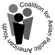

Coalition for Asian Pacific American Youth (CAPAY)

Website:
http://www.capaymovement.net/ Location:
Boston, MA
The Coalition for Asian Pacific American Youth (CAPAY) is a nationally-recognized, youth-led, pan-Asian organization, established in 1993, that provides culturally-responsive resources, critical education, and community-based advocacy/service-learning opportunities to strengthen the voices, leadership, and organizing capacities of Asian American youth within their schools, families, and communities. Initially established in response to racist violence in Boston high schools, CAPAY is administered as a project of the Asian American Studies Program at University of Massachusetts Boston with the mission of building leadership among Asian American high school students in the metro Boston area through the development and implementation of youth-led projects. We believe that youth united by a common cause can make a difference.
Project Description:
The core mission of CAPAY itself is essentially to develop the capacity (knowledge, skills, voices, leadership) of Asian American youth to be pro-active and resourceful agents of positive change for their families, schools, and communities. This central capacity-building goal of CAPAY has not been so readily recognized or rewarded by funders who have neglected Asian American populations overall and focused on provider-client models of service delivery rather than capacity-building. Ann Philbin, whose 1996 quote is used in the CTC VISTA program guidelines, is a longstanding ally in our work, and we continue to value her contributions to the field. Our principles are informed by the literatures and best practices of youth and community development, but we also explicitly value our own indigenous cultural sources. Familiar Chinese poems, for example, advise: “Don’t be seduced by the moment; fight for what will have value in a thousand years” and “if you give a hungry person a bowl of rice, s/he can eat for a day; if you teach her how to plant and harvest rice, s/he can eat for a lifetime.” These cultural reference points related maintaining a long-term view and investing in training/education rather than charity/service exemplify how we understand capacity-building.
We have been implementing a media justice project that originally targeted Vietnamese American youth in Dorchester who were already involved with youth service programs offered by agencies in the community. Unexpectedly, however, the two primary Vietnamese American community groups in Boston — the Vietnamese American Civic Association (VACA) and Viet-AID — confronted organizational crises during August-September, resulting in lay-offs, budget cuts, and staffing/board shifts. This left the Vietnamese community with little organizational capacity for youth services, and forced CAPAY to re-focus our own priority on direct youth organizing. Originally, we had intended to partner with VACA and Viet-AID in producing relevant youth media for the local Vietnamese community. Without the structure/support of VACA and Viet-AID, however, we have devoted significant time to reach local Vietnamese American youth and connect them to CAPAY’s youth media programming. This sudden loss of organizational/institutional capacity in the Vietnamese community had many important implications beyond simply affecting CAPAY’s plans for project collaboration, but it provided a valuable lesson regarding the necessity to stabilize our own organizational infrastructure in order to ensure3 the viability of our priority projects.
We intend to expand our media justice-related programming and project work with more direct linkages to youth organizing, and have identified other potential community collaborations while also communicating our continuing interest in working with Viet-AID and VACA. However, given these changing conditions in the local community, combined with the enormous effect of the national/global economic crisis on low-income, immigrant/refugee families, and the parallel reduction of grant resources for the community, CAPAY has held a series of strategic planning discussions with stakeholders during the past six months. Though still underway, consensus has emerged regarding the following goals for organizational development:
1. Maintain programmatic commitments to youth organizing, leadership development, and expression through expressive media justice projects and educational empowerment workshops/symposia.
2. Expand CAPAY’s financial base, including earned income, donations, and grant development.
3. Activate and mobilize CAPAY’s alumni network to provide increased/ongoing resources.
4. Initiate and nurture long-term organizational partnerships in addition to shorter-term project-based collaborations.
5. Make fuller use of Web 2.0 tools to support and streamline organizational communications, mapping of organizational assets (including alumni networking), and outreach/promotion.
CAPAY also received expanded support from the UMass Boston Asian American Studies Program that will continue for an additional two years — enabling CAPAY’s coordinator, Tri Quach, to provide stable overall leadership and direction to the organization and its programming. This is a significant enhancement of CAPAY’s infrastructure, consistent with the longer-term goal of organizational development.
Project Tangibles:
We look forward to generating tangible products or resources that can be shared or adapted by others. Though this will depend heavily on the specific skills and interests of the VISTA member, we envision some possible products as:
• templates for grant proposals and relevant promotional materials;
• examples of Asian American youth/community issues/assets maps created and made accessible through Web 2.0 tools;
• narrative and visual documentation (written or digital) of CAPAY alumni perspectives;
We would be interested in participating/sharing lessons and products with others in person or online through workshops and conferences or webinairs.
Supported Projects
Curricula Development and Program Building
Molly Higgins
9/2009 — 9/2011
While being involved with some of CAPAY’s youth/community/media programming plans, our proposed 2009-2010 VISTA member, will primarily be responsible for enhancing CAPAY’s current and future organizational capacity
Goal 1: Activate and mobilize CAPAY’s alumni network to provide increased/ongoing resources
Goal 2: Using Web 2.0 tools to support and streamline organizational communications, mapping of organizational assets (including alumni networking), and outreach/promotion.
Goal 3: Initiate and nurture long-term organizational partnerships in addition to shorter-term project-based collaborations.
Goal 4: Develop assessment and reflection tools with which to document short-and long-term impact of CAPAY program and project participation on youth participants, community members/organizations, and CAPAY alumni
Goal 5: Expand CAPAY’s financial base, including earned income, donations, and grant development.
Molly’s main role in the 2010-2011 service year will be to collect and organize pre-existing content, produce some original content, and produce/package training materials for staff and volunteers to take over the project. This includes archiving CAPAY’s collections of resources and workshops and digitizing them for the CAPAY website and also developing a training curricula that could potentially be used as a revenue stream for CAPAY in the future. The VISTA will also partake in fundraising and grant writing for the program.
our VISTA member goals for 2009-2010 were: - Provide staff support to assist organizational members in convening and revitalizing the CAPAY Alumni Network. - Develop community partnerships and collaborations, including youth/community internship sites, to build sustainability of the program into future years. - Develop grant/funding proposals and enhance CAPAY’s funder networks in conjunction with CAPAY staff and Adult Advisory Board. - Organize grassroots fundraising events for CAPAY programs. - administer/maintain CAPAY’s website and Web 2.0 presence (e.g., updating Facebook, Youtube, Google maps, etc) while exploring possibilities for online revenue streams and other relevant sources of earned income. - Develop assessment and reflection tools with which to document short-and long-term impact of CAPAY program and project participation on youth participants, community members/organizations, and CAPAY alumni. Molly was successful in implementing Web 2.0 tools to support and streamline organizational communications. She took over the management of CAPAY’s communications, including CAPAY’s Facebooks and listserve. She worked closely with the CAPAY coordinator Tri Quach to integrate Web 2.0 tools into the new CAPAY website. This includes the development of CAPAY’s media portal, designed to gather Asian American media such as digital stories, blogs, and artist websites (including original CAPAY content). She also worked with one of the CAPAY youth to develop a city-wide blog for youth organizing. Molly made progress in initiating and nurturing long and short term partnerships with other organizations. This includes the promotional video she made with other UMass Boston students for MASAE, a local basketball team. She successfully planned and administered all of the CAPAY YouthLearn internships at other organizations, including UMass Boston’s Asian American Studies Program, BCNC, AACA, ATASK, AFH, and Close to Home. Molly re-established connections with CAPAY alumni, the Alumni Network, which has been meeting actively since June to develop fundraising initiatives and to provide planning assistance and support for the November 2010 CAPAY youth symposium. Molly developed several grant proposals that are pending review.
Molly’s organizing and facilitation with these other Asian American youth programs led to the creation of a Steering Committee (SC) representing the Asian American Civic Association’s Youth Center, the Asian Community Development Corporation’s A-VOYCE, Boston Chinatown Neighborhood Center’s YouLead, and the Chinese Progressive Association’s Chinese Youth Initiative, along with CAPAY. This is an unprecedented accomplishment in terms of Boston Asian American community youth capacity-building and provides an organizational framework to foster programmatic collaboration and coordination, shared research and advocacy, and joint grant submissions.
Youth Video Program Development
Janet Hong Vo
7/2008 — 7/2009
- Create training curriculum (including Asian American content as well as technical skills for video projects).
- Recruit, train, and supervise volunteers involved with the project.
- Develop and implement dissemination plan for videos once created.
- Develop community partnerships and collaborations to build sustainability of the program into future years.
- Organize fundraising events for Media Justice and CAPAY programs.
- Develop and implement outreach and organizing plan to connect video projects with community members.
- Develop evaluation plan to determine impact of project on youth participants and community.
- Create infrastructure within the university setting which allows for youth participation at a maximal level.
During the first six months of 2008-2009, Janet was instrumental in producing several new training and curriculum resources — some content-rich and some with the purpose of media/technology application/integration. These included an extensive draft curriculum centered on the historic local Chinese burial grounds of Mount Hope Cemetery that included production of three new digital stories.
She provided critical programming leadership in the organizing of a major Asian American youth symposium in November 2008 that included workshops on Media Justice, Web 2.0 resources, digital storytelling, Asian American history, and community activism.
She also constructed an important database of active Asian American youth and Asian American educators from the metro Boston area.
During the final six months, Janet focused on the launching of the Dorchester Youth Initiative (DYI) — a CAPAY-led program to address critical issues facing Vietnamese American youth and their families and community in Boston’s Dorchester neighborhood. Janet designed much of the content-rich curriculum with an emphasis on youth/community media. Given the limited capacity of other Vietnamese American community-based organizations to focus on youth issues, Janet also worked to establish crucial relationships with a range of community partners, leading to the organizing and documentation of youth/parent forums in the community. She was primarily supported by the CAPAY coordinator, Tri Quach, and a team of three bilingual Vietnamese American college students from UMass Boston whom she recruited as volunteers to help with the launching and implementation of the DYI.
Janet was not able to devote as much time/effort to the fundraising aspects listed in the position description as we had initially hoped would be possible. She did assist with one major fundraising event (an Asian community dessert tasting held at the Vietnamese American Community Center in Dorchester that benefitted CAPAY and other collaborating organizations). She also researched potential funding sources and developed a useful outline for new funding proposals, but did not actually submit any completed proposals during her term of service.
“Janet’s work in producing tangible resources such as video projects, training curricula, and a more robust website portal for CAPAY (in progress) represent important contributions to our organizational capacity with impact beyond the period of time of Janet’s own service. Janet’s leadership to the DYI project creates a platform for CAPAY, together with other community partners, to develop longer-term organizing, programming, and funding opportunities.”
- Peter Kiang, supervisor